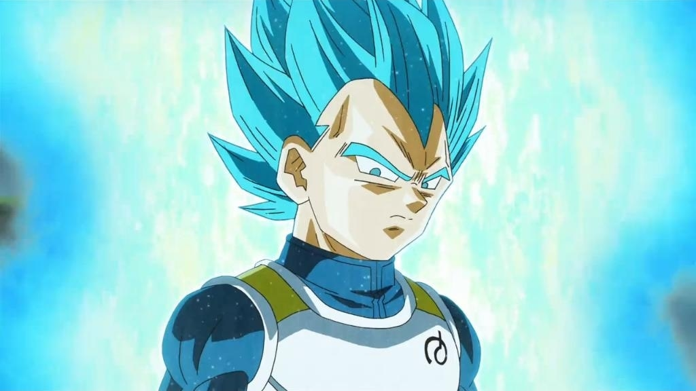
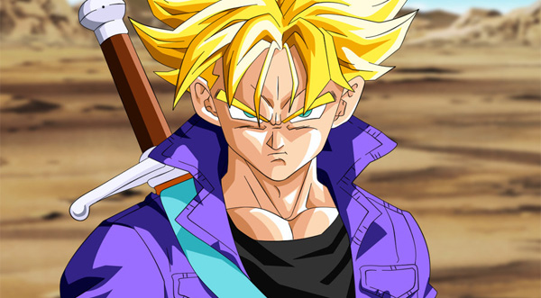
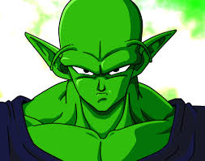

Son Goku (Japanese: 孫 悟空 Hepburn: Son Gokū) is a fictional character and main protagonist of the Dragon Ball manga series created by Akira Toriyama. He is based on Sun Wukong, a main character in the classic Chinese novel Journey to the West. Goku first made his debut in Dragon Ball chapter #1 Bulma and Son Goku (ブルマと孫悟空 Buruma to Son Gokū), originally published in Japan's Weekly Shōnen Jump magazine on December 3, 1984,[1] as an eccentric, monkey-tailed boy who practices martial arts and possesses superhuman strength. He meets Bulma and joins her on a journey to find the wish-granting Dragon BallsInitially believed to have been born on Earth, Goku later learns that he is a member of an extraterrestrial warrior race called the Saiyans, which is also the reason for his superhuman strength, and his birth name is Kakarot (カカロット Kakarotto). As Goku grows up, he becomes the Earth's mightiest warrior and protects his adopted home planet from those who seek to harm it. Goku is depicted as carefree, cheerful and friendly when at ease, but quickly serious and strategic-minded when in battle and also pretty enthusiastic to fight. He is able to concentrate his Ki and use it for devastatingly powerful energy-based attacks; the most prominent being his signature Kamehameha (かめはめ波), in which Goku launches a blue energy blast from his palms. Also pure of heart, Goku has frequently granted mercy to his enemies, which has often earned him additional allies in the process (though has also resulted in others taking advantage of his kindness), and he is one of the few who can ride the magic cloud called Kinto'un (筋斗雲, lit. "Somersault Cloud", renamed "Flying Nimbus" in Funimation's dub); which was another element adapted from Journey to the West
ABILITIES
As a Saiyan, Goku possesses a vast array of superhuman physical attributes, which he has trained to God-like levels through years of rigorous training
- Superhuman Strength
- Superhuman Speed
- Superhuman Durability
- Ultra Instinct
- Spirit Bomb
As a Saiyan, Goku possesses immense physical strength, far more advanced than that of any human being, and most alien races. He is strong enough to effortlessly break all Earthling-made materials or weapons, move in increased gravity without any discomfort, and even lift a suit capable of sinking through a planet.
Goku can move and fly at hypersonic speeds, enabling him the ability to travel great distances in short periods of time, or move at "untrackable" speeds while in combat
Goku's body is far more durable than that of normal human beings, being essentially invulnerable to all Earthling-made weapons. However, while naturally durable thanks to his Saiyan physiology, he does have limits, as other powerful beings as himself can hurt, and potentially kill him, if he does not defend himself correctly, and when purposely lowering his guard and ki to protect him, even an ordinary energy gun shot, was capable of leaving him near death.
A highly advanced mental state. Goku gradually learned this from training under Whis. During the Tournament of Power, Goku unlocked a special state and mastered it, enabling him to put to usage Whis' teachings. Using Ultra instinct, Goku's physical and mental parameters are vastly augmented, providing him with not only equally increased combat performance, but also gives him access to the Ultra Instinct ability, allowing him to instinctively dodge and attack any nearby threat in the most effective way possible. Despite the usefulness of this ability, Goku can only access it as a subconscious reaction to the most dire of situations.
Users of the Spirit Bomb gather huge amounts of energy from all chosen surrounding life forms and inanimate objects to conduct that energy into a massive sphere of astounding destructive power

Vegeta (Japanese: ベジータ Hepburn: Bejīta) is a fictional character in the Dragon Ball manga series created by Akira Toriyama. Vegeta first appears in chapter #204 Sayonara, Son Goku (さようなら孫悟空 Sayōnara Son Gokū), published in Weekly Shōnen Jump magazine on November 7, 1988[1] seeking the wish-granting Dragon Balls to gain immortality. Vegeta is the Prince of an extraterrestrial race of warriors known as the Saiyans just like the series' protagonist, Goku. Vegeta is extremely vain and proud, constantly referring to his heritage throughout the series.[2] He believes he is the strongest fighter in the Universe and becomes obsessed with surpassing Goku after fighting him. After his loss to Goku and the Z fighters, Vegeta later reluctantly unites with the heroes to thwart greater threats to the universe. Throughout the series, Vegeta's role changes from villain to antihero and later as one of the heroes, while remaining a rival to Goku. Vegeta's character, particularly his personality, has been well received. He is one of the Dragon Ball franchise's most popular characters.
ABILTIES
- Double Galick Cannon
- Final Flash
Vegeta uses this technique to kill Pui Pui. It involves him putting both his hands on his opponents chest followed by a huge energy blast at point blank range which completely obliterates them
Vegeta's signature technique. Vegeta conducts ki in both of his hands that places next to each other, combining the ki that discharges in the form of a devastating stream of energy. He used this against Perfect Cell, though the Android regenerated.

Son Gohan (Japanese: 孫 悟飯) is a fictional character in the Dragon Ball manga series, created by Akira Toriyama. Gohan is introduced as the first son of the protagonist Goku, and his wife Chi-Chi, in chapter #196 Kakarrot (カカロット Kakarotto), first published in Weekly Shōnen Jump magazine on October 8, 1988.[1] Chi-Chi is a strict and protective mother to Gohan, forcing him to focus on his studies and forbidding him from practicing martial arts. However, due to the various threats to the Earth, she reluctantly allows him to fight, with him ultimately becoming one of the strongest characters in the series. Gohan has been well received by both fans and critics, the latter usually citing the character's growth from his initial appearance to his defeat of Cell.
ABILITIES
Gohan, in his Super Saiyan 2 form, attacks the opponent with a hook punch and uppercut with whitish-blue energy streaks flying off the punches. Used this attack against Perfect Cell. Named in Dragon Ball Z: Budokai 3.
Gohan attacks the opponent with a kick to their face and another kick to their stomach. Used against Perfect Cell, making him regurgitate Android 18 and reverting him to his Semi-Perfect form. This is one of Teen Gohan's Super Attacks in Dragon Ball: Raging Blast.
Gohan unleashes multiple blasts from his body. He uses the technique against the Cell Juniors.

Trunks (Japanese: トランクス Hepburn: Torankusu) is a fictional character in the Dragon Ball manga series created by Akira Toriyama. He makes his debut in chapter #331 The Young Boy of Mystery (謎の少年 Nazo no Shōnen), first published in Weekly Shōnen Jump magazine on July 2, 1991,[1] as an unknown young man who has traveled back in time to warn of a deadly enemy. He is later revealed to be the half-Saiyan half-Human son of Vegeta and Bulma. Trunks is one of Dragon Ball's most popular characters, and has been praised for his unique role within the series
ABILITIES
- Burning Attack
- God breaker
- Buster Cannon
- Sword of Hope
Future Trunks performs a series of rapid arm movements before placing his palms forward, with the thumbs and index fingers touching each other to form a diamond shape. Then, he fires an energy sphere from his palms towards the opponent.
Trunks extends his hand forward and fires a yellow energy wave at his opponent, inflicting a large amount of damage.
Future Trunks draws his hands back down to his sides and charges two blue energy spheres in his hands. Then, he combines them together in front of him to fire the energy wave at the opponent, inflicting a great amount of damage.
When the hopes and energies of everyone is gathered like a Spirit Bomb, Trunks then absorbs the power into his body — causing his Light Sword to become far larger and more powerful with his ki embedded.

Piccolo (Japanese: ピッコロ Hepburn: Pikkoro) is a fictional character in the Dragon Ball manga series created by Akira Toriyama. He is first seen as the reincarnation of the evil Piccolo Daimao in chapter #161 Son Goku Wins!! (孫悟空勝つ!! Son Gokū Katsu!!), published in Weekly Shōnen Jump magazine on February 9, 1988,[1] making him a demon and archrival of the protagonist Son Goku. However, it is later revealed that he is a member of an extraterrestrial humanoid species called Namekians, those able to create the series' eponymous wish-granting Dragon Balls. After losing to Goku, Piccolo decides to team up with him and his friends in order to defeat newer, more dangerous threats. He also trains Goku's first child Gohan in martial arts, with the two forming a strong bond.
ABILITIES
- Namekian Healing Factor and Regeneration
- Special Beam Cannon
- Demon Hand
- Elastic Left Arm
As a Namekian, and perhaps one of his most useful natural abilities, is Piccolo's rapid healing powers and regeneration capabilities, which allows him to regenerate any lost limb or damaged body part within moments, and has showcased the ability to regrow his entire body from just his head in less than 5 seconds. However, during his youth, this ability seemed to not only consume a violent amount of energy, but he was also incapable of doing it if he was unconscious or too tired, and it seemed to cause extreme physical pain, even more so than losing the limb itself. By the time of the Majin Buu saga, Piccolo's extreme energy consumption over this ability seemed to have been reduced significantly, as he was strong enough to easily defeat Babidi, a powerful wizard, with extreme ease, after regenerating his entire body.
Piccolo's most powerful, but time-consuming, attack, which drills through nearly everything and every being. This was first used when Piccolo fought alongside Goku during their battle with Raditz. By the time of Dragon Ball Super, Piccolo's fully charged Special Beam Cannon was much stronger than even ki blasts from Champa.
The Namekian ability to stretch one's limbs. The user extends his arms to tremendous lengths to attack or grab an opponent.
Piccolo's signature attack in the Raging Blast Series.